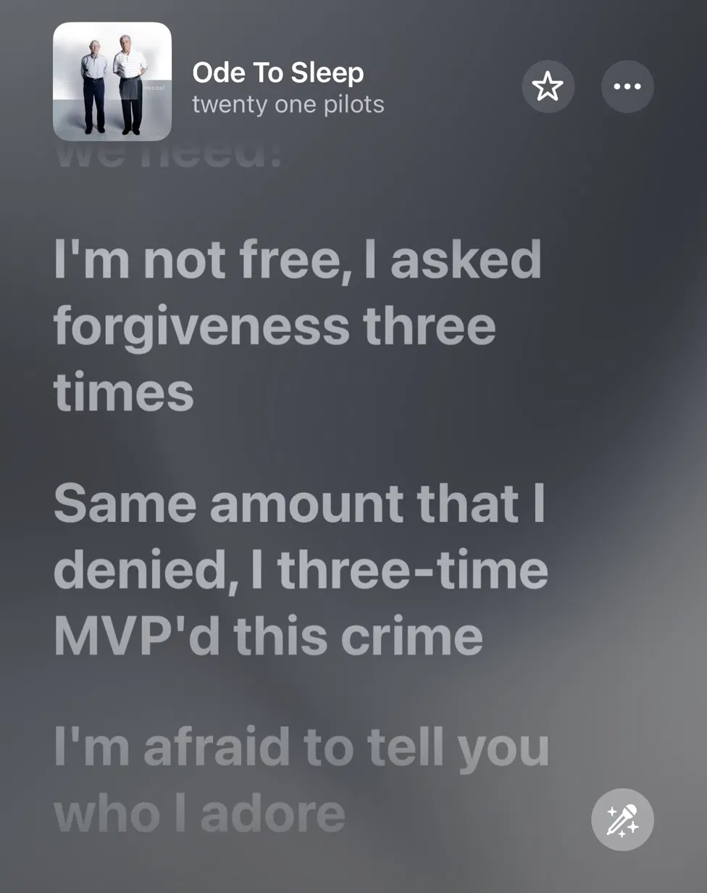
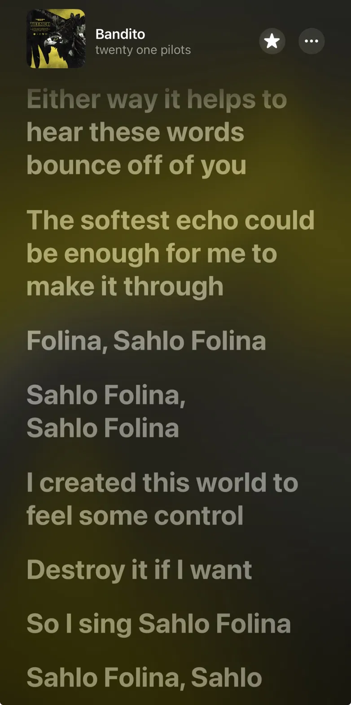

What TØP album is this symbol associated with?
There is much that can be said about the phrase East is Up. My mind goes directly to the rising sun we all know. It brings light to us in the beginning of each day, always from the east from wherever we are. The rising sun is a continual triumph over darkness and a life giving gift to all creation and mankind. In John 8:12, the word of God says "Again Jesus spoke to them, saying, "I am the light of the world. Whoever follows me will not walk in darkness, but will have the light of life." I know what it is to walk in darkness, in DEMA, and I also know there are real Banditos in this world, agents of light who have prayed for me, who showed me the way out. East is Up. Christ is the name on their lips and they taught me to call upon Him, when I cried out, He answered. Sahlo Folina
What anagram is tied to the Scaled and Icy album title?
Because Christ has my ultimate allegiance, I can love my family well.
Because Christ has my ultimate allegiance, I can love and do the work he has given me well.
Because Christ has my ultimate allegiance, I can serve his church and people well.
Because Christ has my ultimate allegiance, I can serve patriotically within the boundaries of land he has placed me in well.
Because Christ has my ultimate allegiance, I can enjoy his creation well.
However, if any of these things were to replace Christ as my ultimate allegiance, no matter how well I do them, I have nothing. For all things in creation pale in comparison to having a right relationship with the Maker of heaven and earth. We must order Him first in our hearts before all things, even good things; He must come before all, because He is above all. Indeed, all good things come from Him so why should it be any other way?
If you have not learned this truth yet, it is because sin is blinding you from its reality. May Christ in His kindness lead you to repentance; that you may see His glory and desire Him above all. If you would rather save your life for yourself, you will lose it; but he who gives his life for Christ's sake, receives eternal life.
Darkness is cast upon the soul by the enemy of human souls; he blinds us with all that glitters. Scaled and Icy is an upbeat and poppy album that sounds happy but underneath there is a dragon in hiding; all is not what it seems. Lies, propaganda and the suppression of truth are the trade of the masters who practice deception. It is a cold word to live, a dead world. Clancy is Dead and Scaled and Icy, though an anagram are also parallel statement in harmony. What I find interesting is that the very dragon itself is used against his will to serve in freeing Clancy from this dead world. This makes me think of the cross of Christ; the most vile sin ever committed in human history against the only sinless human being ever. It is through the cross that sinners are made free. While the enemy thought he had the victory, he really was just a pawn serving himself the biggest blow to his kingdom as of yet; and that, by the secret decree of God. So there is hope that gets into DEMA; the enemy often falls into his own trap and the self titled album Clancy appears after the enemy would have everyone believe Clancy was dead. Moral of the story, seek truth and don't trust false prophets.
Do we who call ourselves Christians have any friends who are heathens? Heathens by TØP is a profound song to me. I find myself asking, how friendly am I toward unbelievers? Tyler gives me good advice; take it slow. Wait for them to ask you who you know. Who do I know? Who does Tyler know? I'm confident that person is Christ.
When you read about Christ in the Gospels (and if you haven't, you absolutely should), you see Christ befriending heathens. He is a friend to sinners and the unholy. The self-righteous get upset with Him about this all the time, but He often said that the healthy do not need a physician, but the sick.
If we are to be followers of Christ, then our circle of friends should know the categories of sin and holiness exist, but still want to hang with us. Christ did not partake in sinful behaviors — He exposed them in a way that drew people to Him. He loved them enough to give them the words of eternal life.
We need to lend our ear to the lost, to pray for them, to be friends with them, and take it slow. Invest in friendships as Christ befriended us when we were still heathens enslaved to our sins.
In Christ, no matter where you're from, a heathen enslaved to a false religion or worldview can be turned into a Christian — a Bandito — free to live unto God, to enjoy and walk alongside His people because of the finished work at the cross by His only Son.

The worst friend tells you you have nothing to be sorry for. You have nothing to apologize to God for. You’re good just as you are. Don’t change. The concept of regret is never in his thoughts or on his lips. Are you your worst friend?
So much of Tyler’s songwriting is geared towards encouraging us to have honest conversations with God and ourselves. There is good and evil in this world and we’re all choosing sides. Refusing to think, to avoid the choice, is making a choice with the worst friend. Either it’s a lie you believed from someone else, or a lie you tell yourself. Don’t be that guy. Be honest with God and yourself. Measure yourself against His holiness and your filth. This is where love, justice, and mercy meet — in Christ, at the cross. He has risen, so there is hope.
The best friends are those willing to tell you that east is up. That there is a way out. Christ has risen!
Around the 2:35 mark, Tyler describes Blurryface as a kind of mirror — a seat at the table he could sit across from and really face. He talks about recognizing the things he doesn’t like about himself, then realizing it came down to “jurisdiction” — specific places, mentally or physically, where that persona held control. Staying away from those places is what started to loosen its grip. That’s what Trench represented: leaving for somewhere safer, wilder, less predictable, and refusing to keep playing by Blurryface’s rules.
I’m curious what you think the TØP lore is all pointing to from Tyler’s point of view. Like, why he created it. If you DM me on Instagram with your theory, I will reply with a hint on the hunt for the ticket (one of the words in the phrase).
I’ll share with you my thoughts on this question now. I’m honestly just enjoying learning about the lore still. I’m relatively new to the TØP scene and don’t want to pretend that I have it all figured out.
But one theme I see in Tyler’s writing, going all the way back to his first album, is emotional honesty. He practices and encourages transparency in introspection. He wants us to face ourselves and confront the truth of our brokenness. To think, to ask big questions, and to cry for help.
Ultimately, I think he is writing honestly about the reality of the fallen nature of man and that there is hope. There is a Helper, a way out, but we must be honest about the problems in us. The answer is not in us, we are the problem. The answer is outside of us.
This is consistent with the scriptural narrative that sinners need a savior, and the Bible teaches us that God opposes the proud but gives grace to the humble. Tyler would have us all do business with God; to be honest with him. Look at the mirror of the law and see our brokenness and ask for mercy and help. In Christ we find it.
And even those of us in Christ, as I believe Tyler is, will find that the old man in us still tries to take control. There are places we used to go but should no longer. In Christ we overtake our former selves.
There’s something good in confession. Encouraging honesty of expression of what’s going on in us is healthy. This often starts with articulating vulnerable questions of oneself. Whenever someone starts to even do such a thing, we find there’s an internal resistance present that doesn’t like it. A temptation that such introspection is a waste of time, or that there is nothing wrong in us, etc.
We all know something is wrong with us. We also know we cannot save us from ourselves. So when we confess, when we ask questions, especially perhaps for the first time, we should ask externally but in private. Kind of like this: Are you there? Can you see me? I’m a mess. I need help. God, help me. If you’re real I need you now.
I know from personal experience that my new birth into the Kingdom of Christ started this way. This also aligns with what God has revealed in His word concerning the matter.
Romans 3:23
“For all have sinned and fall short of the glory of God.”
Matthew 6:6
“When you pray, go into your room and shut the door and pray to your Father who is in secret.”
Romans 10:13
“Everyone who calls on the name of the Lord will be saved.”
The song heavy dirty soul reminds me of confession. It asks internal questions outwardly. It’s an extremely vulnerable song but it’s also a roadmap of how an enslaved person can escape the weight of his sin. Who is The Who Tyler is asking if he can save him? The One and Only Living God who does not have a heavy dirty soul. Other humans and the religions of humans created by other heavy dirty souls cannot save. The only God, Christ Jesus who took on flesh and never sinned is worthy of such questions. Direct your confessions to Him in private and be saved. Then once saved, you can confess to other believers you grow to trust, this is good too.
The truth is, where we’re from, our hometown is in the dark. From here, there is no Hope. But the one who is from above is the light of the world.
Need a hint? A couple of words are already out — DM @secondadam_nc if you caught the Week 5 discussion prompt, or check whether you shared the Week 6 video to your Story and tagged us. New hint opportunities keep coming as the hunt continues.
“Blessed be the God and Father of our Lord Jesus Christ! According to his great mercy, he has caused us to be born again to a living hope through the resurrection of Jesus Christ from the dead, to an inheritance that is imperishable, undefiled, and unfading, kept in heaven for you, who by God’s power are being guarded through faith for a salvation ready to be revealed in the last time.” 1 Peter 1:3–5

I see Tyler talking honestly here. Knowing he needs help to make it to the other side. In City he is trapped and needs rescue. He only gets out by asking for help. Sahlo Folina is a prayer. Let me not destroy myself. I’ve built this world so I can have control. I wanted the apple in the garden because I didn’t trust you and wanted power I wasn’t supposed to have. I was deceived. I’m fallen. Sahlo Folina, help me. Don’t let me destroy myself before I get help. Send help quick. I need a birth from above. Save me.
We are human creatures, not accidents by random chance. Created order matters because there is a Creator. History also matters. We are here because of the created order that Male and Female becoming one flesh produces offspring. History also matters because the Creator has revealed Himself in what His hands have made and in what He has spoken in scripture. There are boundaries He has placed for us and they are good, right and holy.
Any idea that would encourage the breaking of boundaries given to us creatures by God our Creator, is liken to the apple offered Eve in the garden. We are told the lie that we will not surely die; there is no harm if someone wants to express themselves however they choose. But God said they would die, and the devil is a liar and we have been dying ever since.
Same is true with sexual identification. God has said marriage is for one man and woman, from the beginning He made it so that they should become one flesh. Let man not separate what God has designed. If we go beyond the boundaries He has given us, we do not trust or love Him, but sin in disobedience.
Do not believe the lies of the culture that you are an autonomous accident able to live detached from God’s revelation without consequence. Your flesh wants to believe there is no God but He Is, and He loves you enough to send His Son to save you from sin. Self identification into anything other than God’s design for male and female is sin, sin that God went to the cross to forgive us for. Let us not separate what God has joined together. Let us turn from the sins that sent the Lord of glory to the cross.
“He answered, “Have you not read that he who created them from the beginning made them male and female, 5 and said, ‘Therefore a man shall leave his father and his mother and hold fast to his wife, and the two shall become one flesh’? 6 So they are no longer two but one flesh. What therefore God has joined together, let not man separate.” (Matthew 19:4–6, ESV)
Or do you not know that the unrighteous will not inherit the kingdom of God? Do not be deceived: neither the sexually immoral, nor idolaters, nor adulterers, nor men who practice homosexuality, 10 nor thieves, nor the greedy, nor drunkards, nor revilers, nor swindlers will inherit the kingdom of God. 11 And such were some of you. But you were washed, you were sanctified, you were justified in the name of the Lord Jesus Christ and by the Spirit of our God. (1 Corinthians 6:9–11, ESV)
Perhaps your flesh is reeling that such constraints should be put on us. What does this ancient text have to say to me that should have any value? Consider how Jesus viewed the ancient texts of the Old Testament…
“And as for the resurrection of the dead, have you not read what was said to you by God: 32 ‘I am the God of Abraham, and the God of Isaac, and the God of Jacob’? He is not God of the dead, but of the living.” 33 And when the crowd heard it, they were astonished at his teaching.” (Matthew 22:31–33, ESV)
Jesus taught that reading scripture was God speaking to us. Jesus held them accountable to what God has spoken. We will be held accountable to what God has spoken. Read His word, trust in Christ and obey Him. If you claim to love Christ but do not desire to obey Him, check yourselves. God will not be mocked and all will give an account for how we live in these bodies He has given us. We are His creatures and we owe Him our every breath. It is good that He is loving, kind and patient, wanting us to reach repentance and faith. May we come to Him with humble hearts and turn from sin and trust in His good designs.
Galatians 5:17 “For the desires of the flesh are against the Spirit, and the desires of the Spirit are against the flesh, for these are opposed to each other, to keep you from doing the things you want to do.”
Galatians 5:24 “And those who belong to Christ Jesus have crucified the flesh with its passions and desires.”
Revelation from heaven reveals a path that denies self by taking up a cross. A way that kills the old man in us so that the new man, the man that ought, lives.
I see this truth built into the fabric of so many TØP songs — the Old Man in us who wars against the Spirit of God… what name does Tyler give him? Answer correctly below for a big reveal.
John Owen once said, “Be killing sin, or it will be killing you.” Go and “overtake your former selves” my fellow banditos.
16 letters. Collect them all. Unscramble.
DM @secondadam_nc when you have the answer.
16 letters. Collect them all. Unscramble.
DM @secondadam_nc when you have the answer.
Follow Eric's Biblical Indie Rock playlist on Spotify. Share it to your Instagram Story and tag both @sowerproject and @secondadam_nc — you'll get sent a word from the phrase.
16 letters. Collect them all. Unscramble.
DM @secondadam_nc when you have the answer.
A few of you have already solved the phrase, some even before this week’s letter dropped. If you’ve been paying close attention, you already know the pool of potential winners is small.
You’re welcome to send your guess as many times as you’d like — I’ll only respond if you get it right. Entries close 7:00 PM Tuesday, September 8th.
Missed a hint along the way? Three hint opportunities have already gone out: Week 5, Week 6, and Week 12 each had one. If you haven’t caught them yet, go back and check what each week asked for — there’s still time before the window closes.
Christianity rightly answers foundational questions we all have; ones like: who God is, and who man is. The 66 books of the Bible are self-attesting revelation from heaven, historically tested and proven true time and again, giving words to us through God’s appointed mouthpieces that we can know answers to these foundational questions and so much more.
God in scripture is revealed as sovereign and free to do whatever he pleases. There are none like Him, none before or after him, none who control his freedom to do as he pleases. He is holy and set apart from all creatures as the only uncreated one. He calls himself I Am when speaking to His creatures. He is the one who decided to form man from the dust of the ground for His own purposes and pleasure.
Man in scripture is from here. He is from dust and to dust he returns because of the fall of the 1st Adam. The good news is that the 2nd Adam, also known as Christ Jesus, came to overturn the curse of the 1st Adam. Jesus’s victory over sin and death, testified to in his resurrection, is a historical proclamation of the greatest news ever, relevant right now to whoever is reading this. Because He is risen there is great news for us cursed to the grave. The sinless Christ willingly died for sins he didn’t commit because he loves us, those who would believe this gospel (good news) he came to redeem us! To save us from our sins! If you believe this good news, do not harden your heart, turn from the sin and confess it now to him and be free from those chains. Come into the light and honor Him as you were made to do.
So man is From Here, from the earth, but as Christ teaches Nicodemus in John 3, a man must be born again to enter His kingdom. Christ is from above. He came from heaven to the earth to save sinners and then went back after his resurrection. Those who are born from above share the same testimony, that they are saved from the consequences of their sins In Christ and In Christ alone. Christ alone is the one who restores the relationship with God his Father that our father Adam lost in the garden. This is why I named my musical project Second Adam & the New Creations, the Second Adam restores all things, even giving this sinner a new heart, one that beats for Him. Even though I am From Here, In Christ I am a new creation, full of love, hope, peace, gratitude and joy. I have received grace I didn’t deserve. You can too. Believe upon him today. Be honest and ask him to lead you to turn from sinful desires. Turn to the holy one. Whom the Son sets free is free indeed.
“Our God is in the heavens; he does all that he pleases.” (Psalm 115:3, ESV)
“then the Lord God formed the man of dust from the ground and breathed into his nostrils the breath of life, and the man became a living creature.” (Genesis 2:7, ESV)
“By the sweat of your face you shall eat bread, till you return to the ground, for out of it you were taken; for you are dust, and to dust you shall return.” (Genesis 3:19, ESV)
“Therefore, if anyone is in Christ, he is a new creation.” (2 Corinthians 5:17, ESV)
“He who comes from above is above all. He who is of the earth belongs to the earth and speaks in an earthly way. He who comes from heaven is above all. He bears witness to what he has seen and heard, yet no one receives his testimony. Whoever receives his testimony sets his seal to this, that God is true. For he whom God has sent utters the words of God, for he gives the Spirit without measure. The Father loves the Son and has given all things into his hand. Whoever believes in the Son has eternal life; whoever does not obey the Son shall not see life, but the wrath of God remains on him.” (John 3:31–36, ESV)
“I have given them your word, and the world has hated them because they are not of the world, just as I am not of the world. 15 I do not ask that you take them out of the world, but that you keep them from the evil one. 16 They are not of the world, just as I am not of the world. 17 Sanctify them in the truth; your word is truth” (John 17:14–17, ESV)
“And you were dead in the trespasses and sins in which you once walked, following the course of this world, following the prince of the power of the air, the spirit that is now at work in the sons of disobedience—among whom we all once lived in the passions of our flesh, carrying out the desires of the flesh and the mind, and were by nature children of wrath, like the rest of mankind. But God, being rich in mercy, because of the great love with which he loved us, even when we were dead in our trespasses, made us alive together with Christ—by grace you have been saved—and raised us up with him and seated us with him in the heavenly places in Christ Jesus, so that in the coming ages he might show the immeasurable riches of his grace in kindness toward us in Christ Jesus. For by grace you have been saved through faith. And this is not your own doing; it is the gift of God, not a result of works, so that no one may boast. For we are his workmanship, created in Christ Jesus for good works, which God prepared beforehand, that we should walk in them.” (Ephesians 2:1–10, ESV)